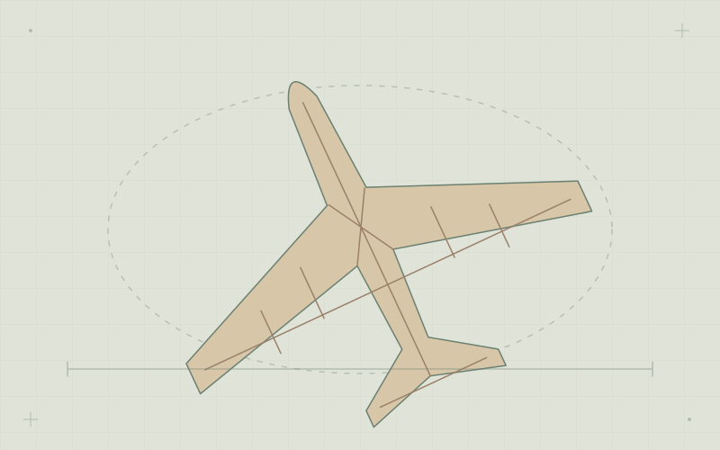

Leadership & outreach
EP Aero: opening doors to aerospace.
I helped create the Escola Piloto de Engenharia Aeroespacial at UFSM, connecting students, aerospace professionals and public schools through practical learning.
Carancho Aerodesign · UFSM / 2020–2022
At Carancho Aerodesign, I led the structural block across three departments: structural analysis, loads and aeroelasticity, and CAD.

01 / The challenge
02 / What came out of it
The team placed 10th in the 2021 national SAE Brasil Aerodesign competition.
03 / Skills in practice